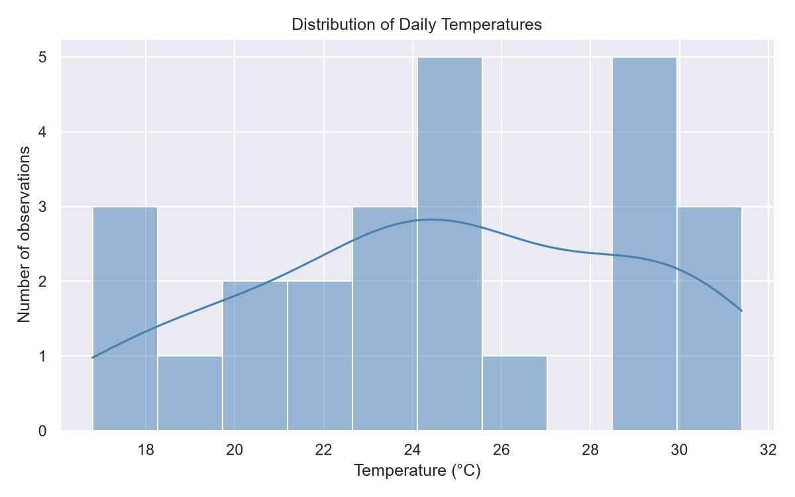
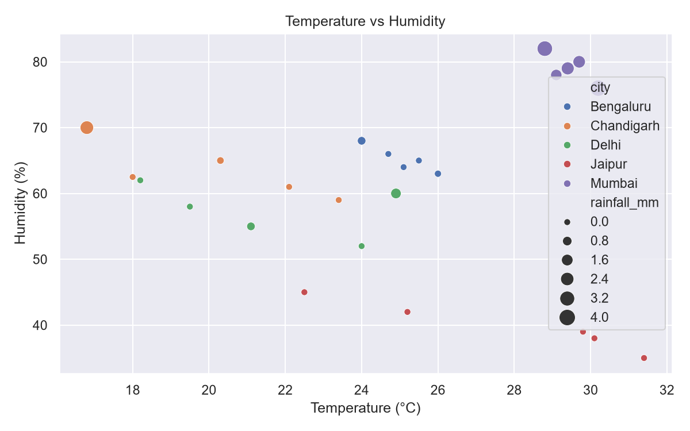
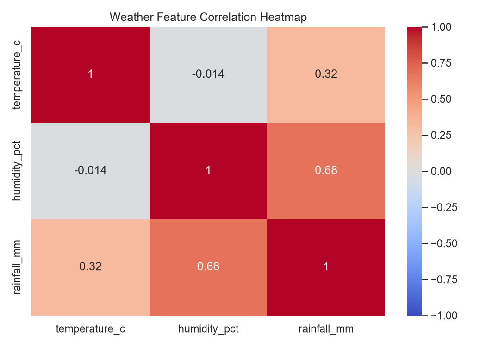

Month 1 Data Science Project — Skybrisk Intern Certification
Demonstration dataset only; values are illustrative and are not live weather readings.
| city | average_temperature_c | average_humidity_pct | total_rainfall_mm | observations |
|---|---|---|---|---|
| Mumbai | 29.44 | 79.0 | 13.2 | 5 |
| Jaipur | 27.80 | 39.8 | 0.0 | 5 |
| Bengaluru | 25.06 | 65.2 | 0.6 | 5 |
| Delhi | 21.54 | 57.4 | 1.7 | 5 |
| Chandigarh | 20.12 | 63.5 | 2.7 | 5 |


